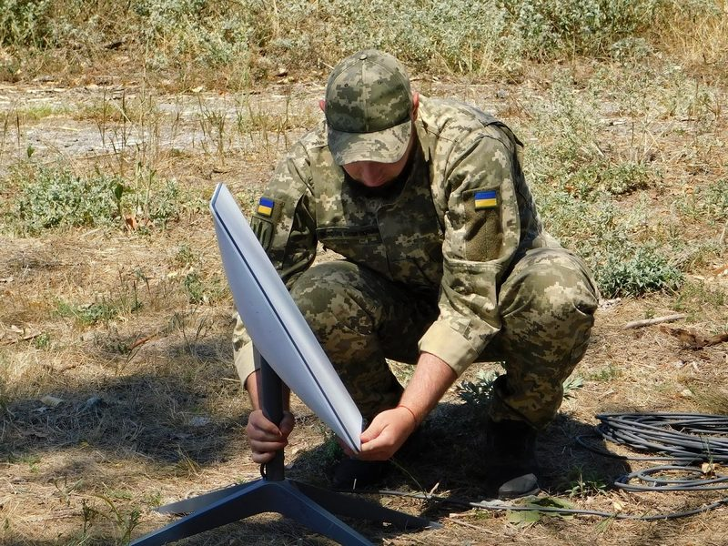

"A civilian operation"
Musk says Starlink cannot be used for offensive strikes. Ukrainian officials say limits on the civilian service already made that impossible.
The dispute began earlier this month. Ukrainian officials said that since October 14, speed limits on Starshield, the US government's military version of the network, had disrupted drones flying faster than about 100 mph. On Saturday, Ukraine's Defense Ministry said speeds had been restored on equipment moving above 400 km/h, CNBC reported. Musk's answer, in a post replying to a supporter, drew a line between the two systems: "Starshield, a different system, is controlled by the US government. What they decide to do is up to them."

Musk repeated the point through the evening. At 8:33 p.m. EDT on Saturday he answered journalist Jamie Dupree, who had noted that members of both parties say the Pentagon must find other partners than SpaceX: "Starlink's terms have remained consistent as a civilian system, not a means of killing. Violation of those terms will result in end of service." At 9:10 p.m. he told the account zerohedge: "We simply enforced our terms of service when they were bypassed. There has been no change to our terms of service."
At 2:12 a.m. EDT on Sunday, replying to a post about Russia's 2021 anti-satellite missile test, Musk gave a reason for the rule. Starlink "can be used for infrastructure that is military, but it cannot be used for unequivocally offensive strikes that make it fair game to be struck back," he wrote. An adversary destroying Starlink satellites, he added, "would create a domino effect of destruction that would generate a vast field of debris making space unusable." At 10:02 a.m. he pointed to a post by President Volodymyr Zelenskyy that he said described using Starlink for offensive drone strikes, which "has always been against Starlink's terms of service."
The other side. Serhii Beskrestnov, a defense technology adviser to Zelenskyy, said the civilian system "does not function over the territory of Russia" and has carried a 70–90 km/h speed limit for months, so medium- and deep-range strikes with it are "PHYSICALLY IMPOSSIBLE," according to the Associated Press. The Washington Post also covered the exchange.
Musk also described the stakes as he sees them. "Starlink remains critical to the defense of Ukraine, as it is the only system that cannot be jammed or blown up, at least for now," he wrote on Saturday. "Were Starlink to be turned off, the Ukrainian front line would collapse immediately. This is NOT a threat, it is simply a statement of fact." The line echoes a 2023 episode in which SpaceX said it had blocked Ukraine from using Starlink with military drones.